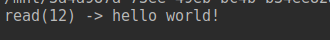

Linux系统编程:文件_基础文件IO调用
本篇文章主要记录了《Linux/Unix系统编程手册》第4章的学习笔记。
在Linux系统中，一切都是文件！我们可以用操作文件的方式，操作Linux上的一切。文件I/O对于Linux系统来说，非常重要！
文件描述符
文件描述符(File Descriptor) 是内核为了高效的管理已被打开的文件所创建的索引，所有执行I/O操作的系统调用都以文件描述符的方式来指代打开的文件。
文件描述符是一个非负整数，用来表示 所有类型的已打开文件，包括 管道(pipe)、FIFO、socket、终端、设备和普通文件。
标准的文件描述符包括三个：标准输入(0)、标准输出(1)、标准错误(2)。
| 文件描述符 | 用途 | POSIX名称 | stdio流 |
|---|---|---|---|
| 0 | 标准输入 | STDIN_FILENO | stdin |
| 1 | 标准输出 | STDOUT_FILENO | stdout |
| 2 | 标准错误 | STDERR_FILENO | stderr |
所以在终端上输命令时，我们可以用 1 代表便准输出，用 2 代表错误输出。
每个进程的文件描述符是有限的，POSIX标准要求每次打开文件时(含socket)必须使用当前进程中最小可用的文件描述符号。在编写需要长期运行并处理大量文件的程序时，比如网络程序，尤其要注意。使用 ulimit -n 可以查看当前系统单个进程最大支持的文件描述符数量。
内核维护着三个数据结构来管理文件：(下面的内容，本章的参考书所描绘的比较混淆，建议参考APUE中的描述。2_3还会进一步分析)
- 进程级的文件描述符表：含有文件描述符标识，使得用户可以方便的访问一个文件，指向打开文件表的指针用于连接打开文件表。每当进程open一个文件时，会添加一个表项，对同一个文件开打多次就会有多个表项。使用dup系统调用也会添加表项。(APUE中称为文件表项，本书中为文件句柄)
- 系统级的打开文件表：记录了进程对文件的读写偏移，以及进程对文件的存取权限，如进程以O_RDONLY方式打开文件。
- 系统级的i-node表：包含文件类型，文件所持有的锁的列表指针，以及文件的各种属性，包括大小、不同类型操作相关的时间戳。
- 同一进程的不同文件描述符，可以指向不同的文件，也可以指向相同文件。如上图中的进程A的1号文件描述符和30号文件描述符，同时指向打开文件表中的23号。可能是dup()、dup2()复制了文件描述符导致。
- 不同进程的文件描述符可能相同，但可以指向相同的文件，也可以指向不同文件。如进程A中的2号和进程B中的2号，同时指向打开文件表中73号，两个进程可能是fork子进程的关系。不同的文件描述符指向同一打开的句柄文件，将共享句柄文件的偏移，换句话说，如果通过其中一个文件描述符对文件进行了更改，改变了文件的偏移量，那么从另一个文件描述符也能观察到变化，不管是不是同一个进程。
- 不同的文件描述符可以指向文件系统中的同一个文件。如A进程中的0号和B进程中的3号，这种情况是由于不同的进程打开了相同的文件造成。
这篇文章讲的比较详细。
通用文件系统调用
常见的关于文件I/O操作的系统调用包括：open()、read()、write()、close()。这四个系统调用可以对 所有类型的文件执行I/O操作，包括终端之类的设备。
打开一个文件: open()
open()调用 既可以打开一个已经存在的文件，也能创建并打开一个新的文件。
int open(const char *pathname, int flags);
int open(const char *pathname, int flags, mode_t mode);
- pathname: 表示文件的名称。
- flags: 表示文件的访问方式，常用的包括 O_RDONLY、O_WRONLY、O_RDWR。
- mode: 表示指定文件的访问权限， rw-rw-rwx 这种模式。
当 open() 调用成功时，会返回 进程中未使用过的文件描述符中数值最小的值。
几个比较常用的文件访问方式：
| 标志 | 用途 |
|---|---|
| O_RDONLY | 以只读方式打开 |
| O_WRONLY | 以只写方式打开 |
| O_RDWR | 以读写方式打开 |
| O_APPEND | 总在文件末尾追加 |
| O_CREAT | 文件不存在则创建文件 |
| O_EXCL | 与O_CREAT一起使用时，当文件已经存在时，使用open调用会返回错误 |
| O_DIRECTORY | 如果pathname参数不是目录，则失败 |
| O_TRUNC | 如果文件已存在且为普通文件，则将文件清空，并将其长度置为0 |
早期的UNIX实现中，使用 creat() 调用来实现文件爱你的创建任务。当文件不存在，会创建文件并打开，当文件存在时，会清空文件内容，并将长度置为0。
类似于 fd = open(pathname, O_WRONLY | O_CREAT | O_TRUNC， mode)。
读取文件内容: read()
read() 调用从文件描述符fd所指代的打开文件中读取数据。
ssize_t read(int fd, void *buf, size_t count);
- fd: 待读取文件的文件描述符，通常由open()的打开的文件。
- buf: 提供用来存放读出数据的内存缓冲区地址，系统调用不会分配内存缓冲区用以返回信息给调用者，缓冲区必须预先分配。
- count：指定最多能够读取的字节数。
调用成功会返回读取的字节数，通常情况下，会和传入的 count 参数一致，但当读取的文件偏移位于文件末尾，有可能出现返回的字节数小于 count参数 的情况。错误返回-1.
另外在读取终端字符串时，遇到 换行符(\n)，read() 调用也会停止，也会出现返回的字节数小于 count参数 的情况。
...
char buf[BUF_SIZE];
ssize_t read_num = read(fd, buf, BUF_SIZE);
if (read_num == -1)
errExit("read");
printf("read(%ld) -> %s\n", read_num, buf);
...
使用上面的代码读取一个文件时，会出现末尾乱码的情况，这是因为 read() 没有遇到终止字符。需要在读取缓冲区中将最后的字符换成 \0。
...
char buf[BUF_SIZE];
ssize_t read_num = read(fd, buf, BUF_SIZE);
if (read_num == -1)
errExit("read");
buf[read_num] = '\0';
printf("read(%ld) -> %s\n", read_num, buf);
...

数据写入文件: write()
write() 调用将数据写入一个以打开的文件中。
ssize_t write(int fd, const void *buf, size_t count);
- fd: 待写入文件的文件描述符，通常由open()的打开的文件。
- buf: 提供用来存放待写入数据的内存缓冲区地址。
- count：指定最多能够写入的字节数。
调用成功会返回写入的字节数，当 磁盘已满 或者 进程资源对文件大小有限制 时，会出现返回结果小于 count参数 的情况。错误返回 -1。
关闭文件: close()
close() 调用关闭一个已打开ia的文件描述符，并将其释放回调用进程，供该进程继续使用，当进程结束时，会自动关闭其打开的所有的文件描述符。
int close(int fd);
文件描述符属于有限资源，因此文件描述符关闭失败可能会 导致一个进程的文件描述符资源消耗殆尽。在编写长时间处理大量文件的程序时，尤其需要注意。
改变文件偏移量: lseek()
lseek() 用来改变文件的偏移量。
对于每一个文件，内核都会在 打开文件表 中记录其文件的偏移量，文件偏移量指的是 下一次read()或write()调用操作的文件的起始位置，会以相对于文件头部起始点的文件位置来表示。每次 read()或write() 将自动对其进行调整。
#include <sys/types.h>
#include <unistd.h>
off_t lseek(int fd, off_t offset, int whence);
- fd: 已打开的文件描述符。
- offset: 新的以字节为单位的文件偏移量。
- whence: 表明应该以哪种方式来解读offset参数。
whence参数有五种：
| 标志 | 说明 |
|---|---|
| SEEK_SET | 从文件头部起始点开始计算 |
| SEEK_CUR | 从当前偏移位置开始计算 |
| SEEK_END | 从文件末尾处开始计算 |
| SEEK_DATA | 从下一个包含数据的偏移开始计算，一般都指向0 |
| SEEK_HOLE | 从下一个空洞的偏移开始计算，一般都指向文件末尾 |
例如：
lseek(fd, 0, SEEK_SET); // 文件开始处
lseek(fd, 0, SEEK_END); // 文件结尾处的下一位置
lseek(fd, -1, SEEK_END); // 文件结尾处前一个字节的位置
lseek(fd, 10, SEEK_CUR); // 当前文件往后是个字节的位置
lseek(fd, -10, SEEK_CUR); // 当前文件往前是个字节的位置
和 find命令 中设置时间的参数很像，都使用的是 +- 符号来表示前后的概念。
文件空洞
空洞文件指的是 从文件结尾后到新写入数据间的这段空间，空洞文件不占用任何磁盘空间，知道未来某一时刻，向空洞文件中写入数据，才会给它分配磁盘块。
空洞文件和以空字节文件相比，占用了较少的磁盘空间。
迅雷会在下载前，在本地创建空洞文件，用来存放下载的文件。在使用多线程进行下载时，就可以同时在不同的偏移处写入数据。
课后习题
总结
- 每个进程都有一张文件描述符表，里面的描述符标识为非负整数，每个标识对应一个打开文件表的指针。
- 打开文件表是进程中文件描述符表和inode表的桥梁。
- 对文件的操作，最终都是通过indoe表中的数据。
- 操作系统在处理文件时，都是通过数字来代替文件名。
- Linux系统对文件的操作具有通用性，open()、read()、write()、close()这四个系统调用可以对所有的文件流进行操作。原因是VFS统一了各类文件系统的接口。